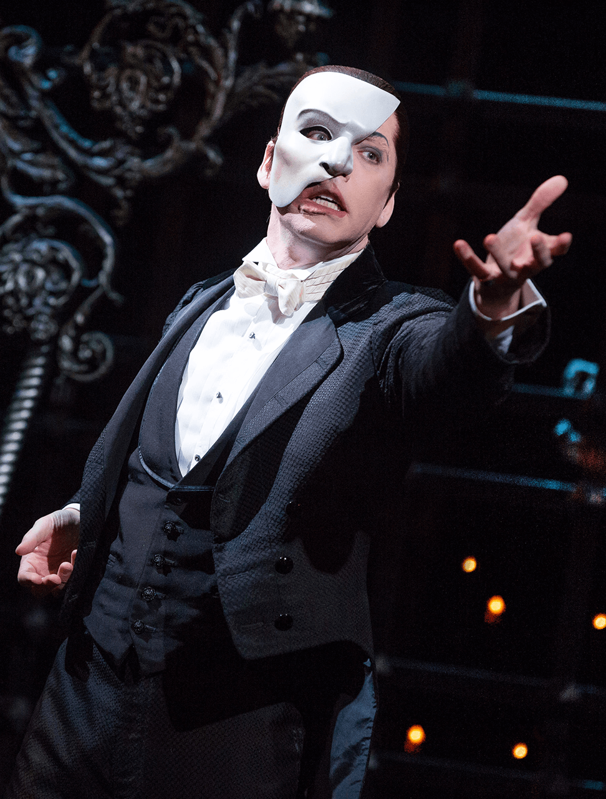
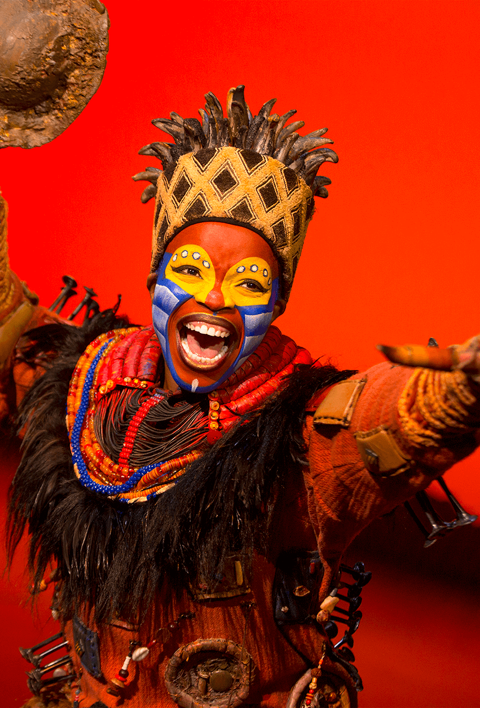
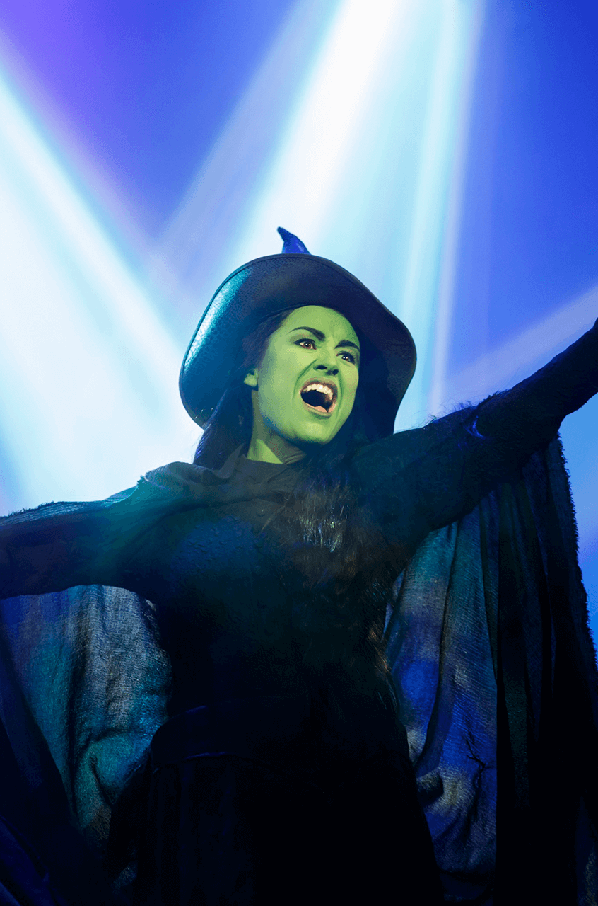

Phantom of the Opera
From his hideout beneath a 19th century Paris opera house, the brooding Phantom (Gerard Butler) schemes to get closer to vocalist Christine Daae (Emmy Rossum). The Phantom, wearing a mask to hide a congenital disfigurement, strong-arms management into giving the budding starlet key roles, but Christine instead falls for arts benefactor Raoul (Patrick Wilson). Terrified at the notion of her absence, the Phantom enacts a plan to keep Christine by his side, while Raoul tries to foil the scheme.

The Lion King
This Disney animated feature follows the adventures of the young lion Simba (Jonathan Taylor Thomas), the heir of his father, Mufasa (James Earl Jones). Simba's wicked uncle, Scar (Jeremy Irons), plots to usurp Mufasa's throne by luring father and son into a stampede of wildebeests. But Simba escapes, and only Mufasa is killed. Simba returns as an adult (Matthew Broderick) to take back his homeland from Scar with the help of his friends Timon (Nathan Lane) and Pumbaa (Ernie Sabella).

Wicked
Wicked tells the incredible untold story of an unlikely but profound friendship between two young women who first meet as sorcery students at Shiz University: the blonde and very popular Glinda and a misunderstood green girl named Elphaba. Following an encounter with The Wonderful Wizard of Oz, their friendship reaches a crossroads and their lives take very different paths. Glinda's unflinching desire for popularity sees her seduced by power while Elphaba's determination to remain true to herself, and to those around her, will have unexpected and shocking consequences for her future.